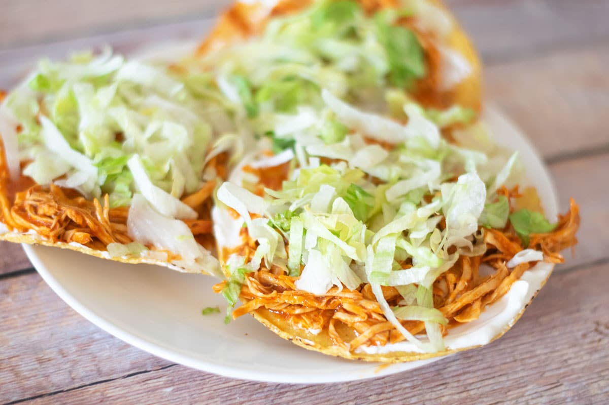

Chicken Tostadas de Tinga

Description
Chicken Tinga (Spanish: tinga de pollo) is a Mexican dish made with shredded chicken in a sauce made from tomatoes, chipotle chilis in adobo,
and sliced onions. It is often served on a tostada and accompanied by a layer of refried beans.
Ingredients
- Shredded Chicken Breast
- Four (4) Tomatoes
- One (1) Garlic Clove
- 1/4 Cup of Water
- Four (4) Chopped Onions
- One (1) tbsp. Oregano
- One (1) Bay Leaf
- Three (3) Marinated Chipotle Peppers
- Three (3) tbsp. Olive Oil
- Salt + Pepper To Your Liking
- Tostadas
- Two (2) Cups of Refried Beans
Steps
- Blend one tomato, one garlic glove, and water. Set aside.
- Saute the onion. Add the oregano and bay leaf. Cook for 5 minutes.
- Add the chicken breast and mix. Pour in the tomato puree and season with salt and pepper.
- Add the chipotle and cook for 15 minutes. Adjust seasoning.
- Spread the toast with the beans, add the tinga, lettuce, cream, cheese and a little sauce.
- Enjoy!